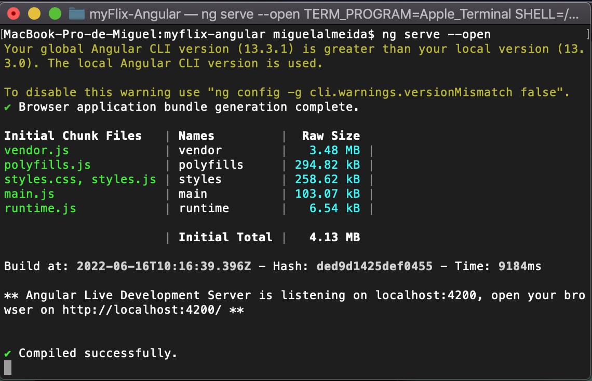
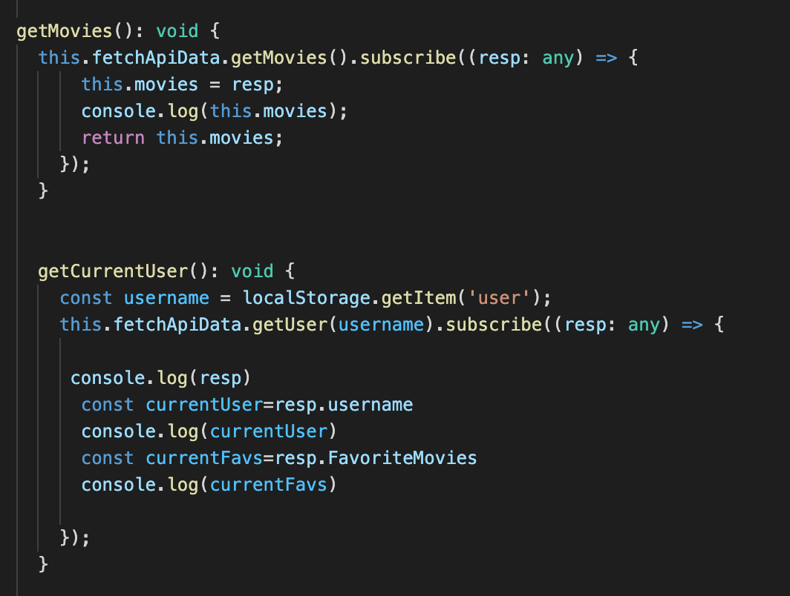
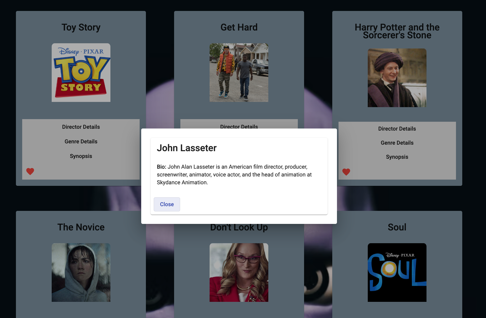

myFlix (Angular)
Concept
myFlix (Angular Version) its a lovely movie app, where you can search for movies, and learn more information about it's directors and the movie genres. The movie data is collected from an API, It has a login/register area and you can edit your own user data!
Project's Duration?
I've found this version of the app to be faster and easier to debug than the one where I've used React. This project took me around 1 month.
| Backend |
MongoDB, NodeJS (Mongoose, Express, CORS, Passport, bodyParser, Bcrypt, Morgan), Heroku, Postman |
GitHub
|
| Frontend/Client-Side |
Angular, Typescript, Javascript, TypeDoc, Axios |
GitHub
|
Credits
This Web Application wouldn't be possible without the guidance and help of my mentors, Terver Aosu and Nizar Triki.

Overview
This Web Application will provide users with access to information about different movies, directors, and genres. Users will be able to sign up, update their personal information, and create a list of their favorite movies.

Features
Return a list of all movies to the user plus data (description, genre, director, image URL, whether it’s featured or not) about a single movie by title to the user. Return data about a genre (description) by name/title. Return data about a director.

Server-Side
This project was first built on the Server-Side. Through a RESTful API, which would pass the movies/director's information, to the front-side of the website.
Simplicity Breakdown: An API is simply some software that sends information back and forward between a website/app and a user.
A REST API uses HTTP requests to receive, send, create, and delete data or files. In other words, via a REST API, a client is able to make changes to or access data from a database they otherwise don’t have access to.

Client-Side
The visual area of the website. Where the backend requests would be displayed. I've used React together with Redux to build the frontend. The user can access more info about movies/directors, register, login, and change user information.
Backend Goals
- Starting the website with $ ng new myFlix-Angular-client
- Generate the Fetch API data with $ ng generate service fetch-api-data
- Use Express to create API points, in order to obtain the movies data later in the frontend.
- CRUD implementation (Create, Read, Update, Delete), with Postman.
- Implementing a CORS policy. CORS allow us to recognize where the request are coming, and if they are coming from trustable sources.
Frontend/Client Goals
- Angular interacts with the Real DOM, React interacts with the virtual one, and Angular updates the whole tree structure.
- Make use of the two-way Data Binding, this means data can flow in both directions, when the model changes, the user interface also changes!
- Improve my Typescript skills, an amazing language to discover bugs and errors early in the process.
- Using the RxJS library which is a high-performance library.
- Implement methods of authentication and form validation between views.
Biggest Challenges?
- At first it took me a while to adapt to Typescript, but I ended up loving it and how easy it is to find bugs!
- Some debugging was required, with Google Chrome DevTools and Visual Studio Code, my mentor also helped me a lot with this.
- A CORS error message kept appearing on the Chrome DevTools when opening the website, it was just a function error on my code, that was found after a deep search.
Further Improvements
- The website will go through some design changes, as I believe in continuous improvement.
- First-time users will receive a security code in their email, to make the registration process safer.
- Additional movies will be added in the future.
Conclusion
myFlix was the second website I've ever built, that related the backend with the client-side, so I felt the improvement!
Before starting the course I was curious about React because of all the hype behind it, but I've learned that Angular and Typescript are also incredible!
It's extremely easy to find bugs in Typescript early in the process, and that helped me maintain a schedule.
The excitement is real, I cannot wait to add more movies and directors to my website!